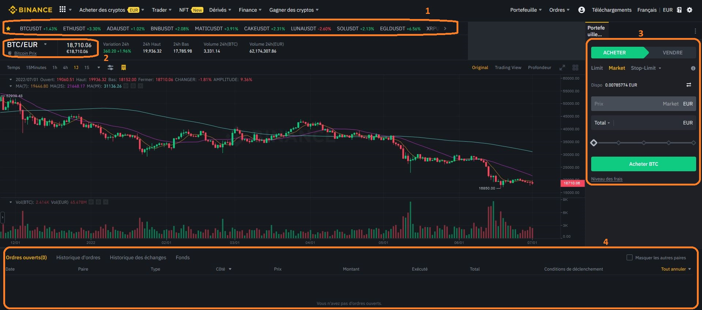

- 2. Acheter des crypto-monnaies : les exchanges / CEX -
Le passé nous a prouvé qu'on pouvait faire de très belles plus-values en investissant dans les cryptomonnaies, mais n'oubliez jamais qu'il n'y a pas d'argent facile, un risque de gain est associé à un risque de perte et si certains ont beaucoup gagné, d'autres ont à l'inverse beaucoup perdu.
Il n'est pas conseillé d'investir en cryptomonnaie sans croire en l'avenir de cette technologie ou sans comprendre ce qu'il y a derrière, vous risqueriez d'avoir du mal à accepter certaines variations de marché, ce qui pourrait vous faire prendre de mauvaises décisions.
2.1 ‹ Introduction ›
Pour échanger des euros contre des cryptomonnaies on pourrait faire cela en peer to peer, c'est à dire que si on veux acheter 100€ de Bitcoin on doit trouver quelqu'un qui veux vendre 100€ de Bitcoin. Cette manière est vous en conviendrez moyennement pratique. C'est pour cela que tout le monde utilise des "exchanges".
Quand on achète des cryptomonnaies, on n'est pas obligé de les acheter à l'unité. On peut par exemple acheter 10€ de Bitcoin soit 0,00040205 BTC qui peut aussi se lire 40205 Satoshi. Le Satoshi est le “centime” du Bitcoin, il représente 0.00000001BTC ou dans l’autre sens il faut 100 millions de Satoshi pour avoir un Bitcoin. Il est envisageable que plus le Bitcoin prendra de la valeur, plus on comptera en Satoshi.
2.2 ‹ Qu’est-ce qu’un exchange ? ›
Les exchanges ou CEX pour Centralised Exchange (en opposition aux Decentralised exchanges) sont des plateformes centralisées où, comme son nom le laisse supposer, vous allez pouvoir faire des échanges. Des échanges entre des monnaies fiat (€, $, etc…) et des cryptomonnaies mais aussi échanger les cryptomonnaies entre elles et tout un tas d'autres choses que nous allons découvrir par la suite.
Pour utiliser un exchange vous devrez créer un compte comme dans une banque en ligne, mais à la différence de celle-ci, sur ce compte vous pourrez détenir à la fois des euros et des cryptomonnaies. Le principe est alors de mettre de l'argent sur ce nouveau compte et de l'échanger contre des cryptomonnaies. Evidement l'inverse marche aussi, vous pouver transformer des crypto détenues sur un exchange en euros et renvoyer ces euros sur votre compte en banque classique.
Depuis votre exchange vous pourrez également faire des “virements” de cryptomonnaies pour envoyer vos fonds sur d'autres plateformes ou sur votre portefeuille privé, faire de l'épargne, participer au lancement de nouveaux projets et j'en passe.
2.3 ‹ Quels sont les principaux exchanges ? ›
Voici 3 exemples d'échanges connus et largement utilisés par la communauté. :
- Binance
- Bybit
- Kraken
La différence entre ces plateformes sont : les frais de transaction, de retrait, le nombre de cryptomonnaies disponibles à l'achat, les services annexes proposés, etc...
Toutes les cryptomonnaies ne sont pas achetables sur tous les exchanges : ils possèdent tous les plus connues cependant si vous cherchez une petite monnaie en particulier vous risquez de ne pas la trouver partout.
N’hésitez pas à vous renseigner par vous-même avant de choisir le vôtre, et même éventuellement à en essayer plusieurs avant de vous décider.
En tant que débutant je ne peux que vous conseiller d’aller sur des exchanges bien connus et sérieux comme ceux cités ci-dessus même si on n'est jamais à l'abri d’une mauvaise surprise, cela reste quand même moins risqué.
Pour les démonstrations nous utiliserons Binance, il est pour l’instant le seul de la liste à être enregistré psan (prestataire de services sur actifs numériques) en France, il est très complet et ses frais sont très bas (je ne suis pas payé pour cette recommandation, ceci n’est pas une publicité).
2.4 ‹ Ouvrir un compte sur un exchange (Binance) ›
Avoir un compte sur un échange est considéré comme ouvrir un compte en banque aux yeux de la loi. Vous devrez donc faire un KYC (c-à-d : prouver votre identité avec vos papiers officiels : carte d'identité, passeport, etc.) pour pouvoir y échanger vos euros.
Cliquez sur binance.com pour arriver sur cette page :
Vous pouvez vous inscrire en utilisant : votre adresse e-mail, votre numéro de téléphone, votre compte Google ou votre compte Apple. Choisissez l'option que vous préférez.
Choisissez si vous créez un compte perso ou un compte d'entreprise.
Vous devrez ensuite entrer une adresse mail et un mot de passe. Une fois validé, Binance vous enverra un e-mail sur cette adresse contenant un code de vérification que vous devrez entrer pour pouvoir continuer.
Ensuite, vous devrez renseigner un numéro de téléphone. Une fois validé, Binance vous enverra un sms sur ce numéro contenant un code de vérification que vous devrez entrer pour pouvoir continuer.
Voilà votre compte est créé, mais cela ne suffit pas, pour pouvoir échanger vos euros contre des crypto-monnaies passons à l'étape suivante.
‹ 2.5 Faire son KYC (know your customer) ›
Pour pouvoir acheter des cryptomonnaies vous allez devoir faire votre KYC dans le but de confirmer votre identité pour que vous ne vous serviez pas de votre compte pour des actions qui vont à l'encontre de la loi (tout comme un compte en banque classique).
Pour cela, depuis la page d'accueil, cliquez sur le bonhomme en haut à gauche puis sur identification.
‹ 2.6 Transférer des euros sur son compte ›
C'est dans votre portefeuille principal (spot), que vous trouverez la liste des cryptomonnaies ainsi que les euros en votre possession. Plus tard, vous pourrez aussi partir d'ici pour vos transferts de fonds, etc...
On reparlera de ce menu quand il s'agira d'envoyer des cryptos sur votre compte Binance.
Par défaut, la devise sélectionnée est l'euro et le mode de dépôt est le virement bancaire.
Le virement prendra entre 24 et 72h suivant votre banque et induit des frais de dépôt très faible.
Vous pouvez aussi choisir le dépôt par carte bancaire, il est instantané, mais il vous en coûtera 1,8% de frais ce qui est très cher, surtout pour des grosses sommes.
Nous choisirons ici les choix par défaut : devise euro et virement bancaire.
Cliquez sur CONTINUER.
Saisissez ici le montant que vous allez virer depuis votre compte en banque.
Cet écran ne sert qu'à vous indiquer les frais qui vous seront prélevés lors du transfert, en l'occurrence 1€, peu importe la somme que vous enverrez.
Puis cliquez sur CONTINUER.
Voici toutes les coordonnées bancaires dont vous aurez besoin pour faire votre virement, rendez-vous maintenant sur le site de votre banque pour faire votre virement en ligne, ou en agence selon vos habitudes.
Vous recevrez un sms et un e-mail pour vous prévenir quand votre virement aura été reçu sur votre compte Binance.
Une fois reçu, il apparaitra dans votre portefeuille spot.
Sur le site de votre banque, vous pouvez enregistrer ces coordonnées dans vos destinataires. De cette façon les prochaines fois, vous n'aurez pas à refaire cette étape.
‹ 2.7 Comment acheter des cryptomonnaies ? ›
On n'achète pas à proprement parlé des cryptomonnaies, sur un exchange on les échange. De ce fait, on ne va pas juste chercher la crypto souhaitée pour en acheter, mais la "paire" qui nous intéresse.
Dans le cas où vous voudriez échanger du Bitcoin contre de l'euro, on va devoir chercher la "paire" Bitcoin/Euro, qui va s'écrire BTC/EUR. Sur les exchanges les monnaies sont très souvent écrites en raccourcis, BTC pour bitcoin, EUR pour euro, ETH pour ethereum, etc....
Voyons comment faire ci-dessous :
En haut à gauche, allez dans le menu déroulant "Trader" puis dans "Marchés".
On va ici pouvoir avoir accès à toutes les paires disponibles sur notre exchange.
Pour commencer, dans la première ligne on va indiquer dans quel marché on souhaite chercher et choisir "Marché spot", pas la peine de vous intéresser aux autres pour l'instant.
Et tout à droite, on va écrire quelle monnaie on cherche, BTC en l'occurrence. (Si vous savez quelle paire vous recherchez, ex : BTC/EUR, vous pouvez directement la taper à cet endroit)
Ensuite, dans la deuxième ligne, on va affiner notre recherche en sélectionnant "Fiat" puis "EUR ", car on cherche à acheter du bitcoin contre une monnaie fiat, l'euro.
En claquant sur "USDT" par exemple, on aurait eu les paires "BTC/USDT" et en cliquant sur "BTC" on aurait eu toutes les paires disponibles avec la Bitcoin.
Et voilà, on a trouvé la paire recherchée. Vous pouvez cliquer sur la petite étoile indiquée d'une flèche pour enregistrer la paire dans vos favoris (le bouton en haut à gauche) et ne plus avoir besoin de la chercher la prochaine fois.
Cliquons donc sur la paire BTC/EUR
La page sur laquelle on arrive peut faire peur au premier abord, mais pas de panique, je vous propose de supprimer le superflu pour rendre la page plus lisible.
Pour cela, cliquez sur la petite roue en haut à gauche, choisissez la mise en page "Avancé" et décochez tout sauf favoris, graphique, ordres ouverts et passer un ordre. Comme sur le modèle.

Si vous avez suivi l'étape 3 vous devriez avoir sous les yeux une page qui ressemble à ça.
La zone 1 : Ce sont vos favoris (que vous aurez définis au préalable).
La zone 2 : C'est la paire que vous avez sélectionnée et son cours actuel.
La zone 3 : C'est l'espace achat / vente.
La zone 4 : C'est là que seront marqués vos ordres ouverts (= ordres limites en attente : voir étape 5) .
Voyons maintenant comment utiliser la zone 3 et 4.
Le plus simple est de passer un ordre d'achat au prix du marché, c'est-à-dire acheter au cours actuel. Pour cela, il faut que "ACHETER" soit sélectionné tout en haut et que vous ayez sélectionné "Market" (n°1).
Juste en dessous vous verrez le montant disponible sur votre compte (en euro ici).
La zone n°2 vous permet de choisir l'unité avec laquelle vous voulez réfléchir.
Total : Vous permet de choisir le montant d'euro que vous allez dépenser pour acheter du bitcoin.
Montant : Vous permet de choisir le montant de bitcoin que vous voulez acheter.
(Exemple : total = 200€, vous achetez 200€ de bitcoin | Montant = 0.1, vous acheter 0.1 bitcoin.)
La zone n°3 c'est ici que vous notez combien d'euros vous voulez transformer en bitcoin.
La zone n°4 (optionnel) vous permet si vous le voulez de choisir le pourcentage des euros en votre possession que vous voulez dépenser.
(Exemple : si vous avez 1000€ sur votre compte et que vous mettez la barre à 50%, vous achèterez 500€ de Bitcoin.
Une fois que vous avez sélectionné "Acheter", "Market", et que vous avez renseigné quelle somme vous voulez dépenser, il ne vous reste plus qu'à cliquer sur le bouton ACHETER.
Pour vendre la procédure est la même, il fait juste sélectionner VENDRE en haut.
 Étape 5.5 : Acheter / Passer un ordre limite
Étape 5.5 : Acheter / Passer un ordre limite Cela signifie que vous allez bloquer une certaine somme d'argent et demander à la plateforme d'acheter quand la monnaie aura atteint un certain prix, dans mon exemple, je demande à Binance d'acheter du Bitcoin uniquement si le prix de 1BTC passe à 15000€.
Pour ce faire, il faut sélectionner "Acheter" et "limit" en haut.
Dans "Prix", notez le prix auquel vous souhaitez acheter du Bitcoin.
Utilisez soit "montant" soit "total" pour dire quelle quantité de Bitcoin vous désirez acheter.
Une fois fait, il ne vous reste plus qu'à cliquer sur ACHETER.
Votre ordre d'achat apparaîtra dans la zone 4 visible sur l'image de l'étape 4. De là, vous pourrez annuler votre ordre d'achat si vous changez d'avis.
Pour passer un ordre de vente, la procédure est la même, il fait juste sélectionner VENDRE en haut.
Vous pouvez retourner dans votre portefeuille spot pour voir les cryptomonnaies en votre possession.